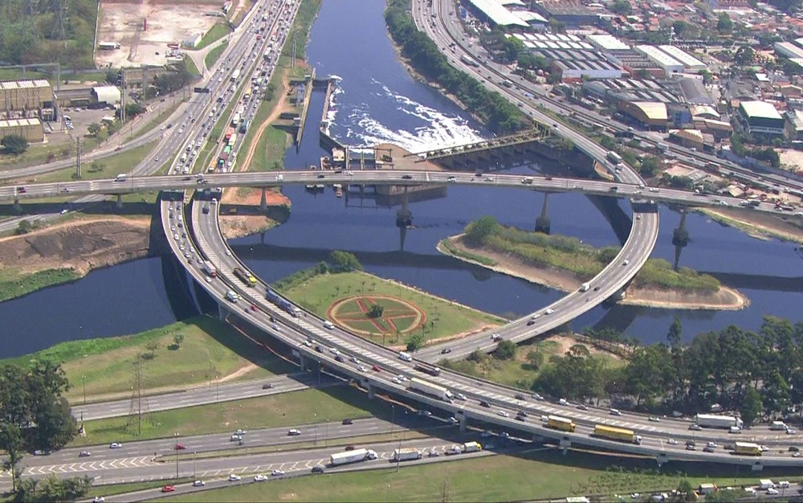

 O viaduto do Complexo Viário Heróis de 1932, conhecido como Cebolão, será parcialmente interditado ao tráfego a partir das 15h deste sábado (2) para que o Departamento de Estradas de Rodagem (DER) realize obras de recuperação estrutural do viaduto existente no local. A liberação total do tráfego está prevista terça-feira (5), às 12h. O desvio do tráfego será por afunilamento - três das quatro faixas de rolamento estarão interditadas e uma liberada ao trânsito. Segundo a Secretaria Estadual de Logística e Transportes, serão executadas recuperação de juntas de dilatação e concretagem do reforço estrutural da laje inferior do Complexo Viário, que liga a Marginal Tietê à Marginal Pinheiros Os trabalhos para recuperação do viaduto, iniciados em dezembro, têm duração total de seis meses. A interdição das três faixas de rolamento, entre os dias 2 e 5 de março, é necessária para o processo de secagem do concreto. A Companhia de Engenharia de Tráfego (CET) recomenda evitar as imediações da ponte durante o período - agentes farão o monitoramento do tráfego e orientação aos motoristas. O Complexo Viário Heróis de 1932 (mais conhecido como Complexo do Cebolão ou simplesmente Cebolão) é um conjunto formado por pontes e viadutos na região do encontro entre os rios Tietê e Pinheiros, na cidade de São Paulo, Brasil. O complexo tem por objetivo interligar três importantes vias: a Marginal Tietê, a Marginal Pinheiros e a Rodovia Castelo Branco, garantindo acesso de qualquer uma destas para qualquer outra. Além disso, a região é considerada o "marco zero" para a contagem da quilometragem das duas Marginais. Inaugurado em 9 de julho de 1978 [2], foi modernizado em janeiro de 2010.